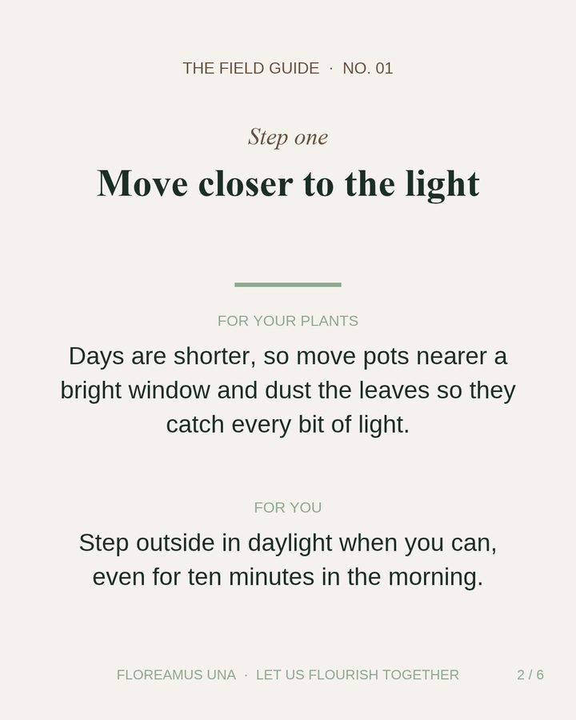
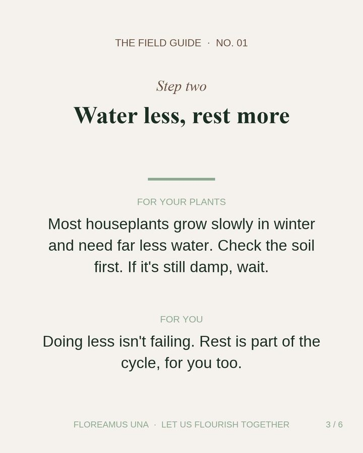
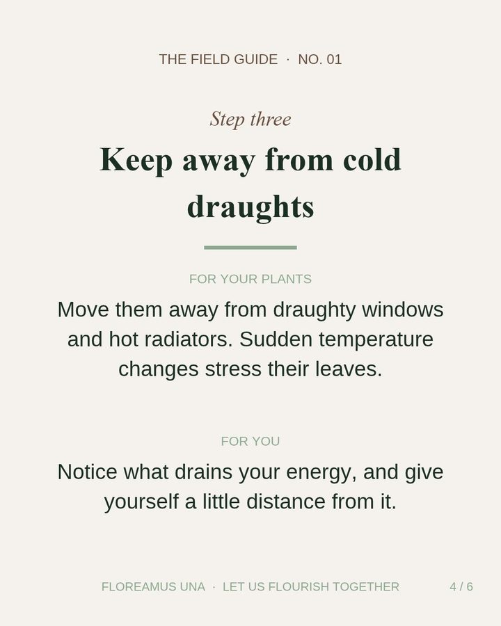
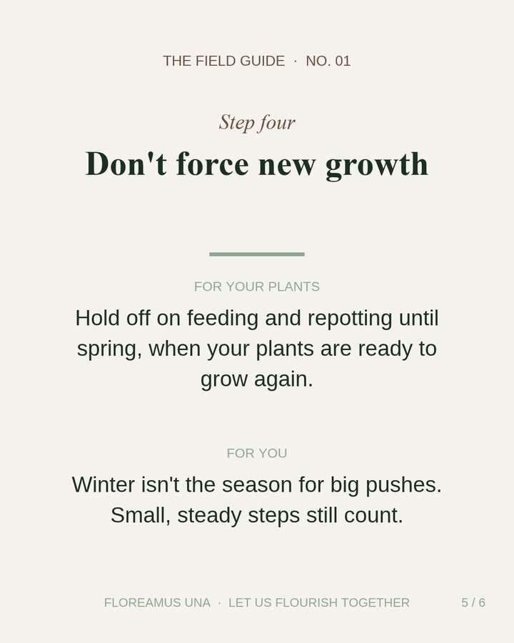
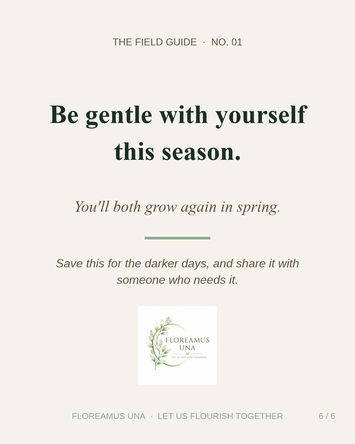

The Field Guide · No. 01
A winter care guide for you and your plants
Four gentle steps for the darker months.
- Move closer to the light
- Water less, rest more
- Keep away from cold draughts
- Don't force new growth
- Be gentle with yourself this season





